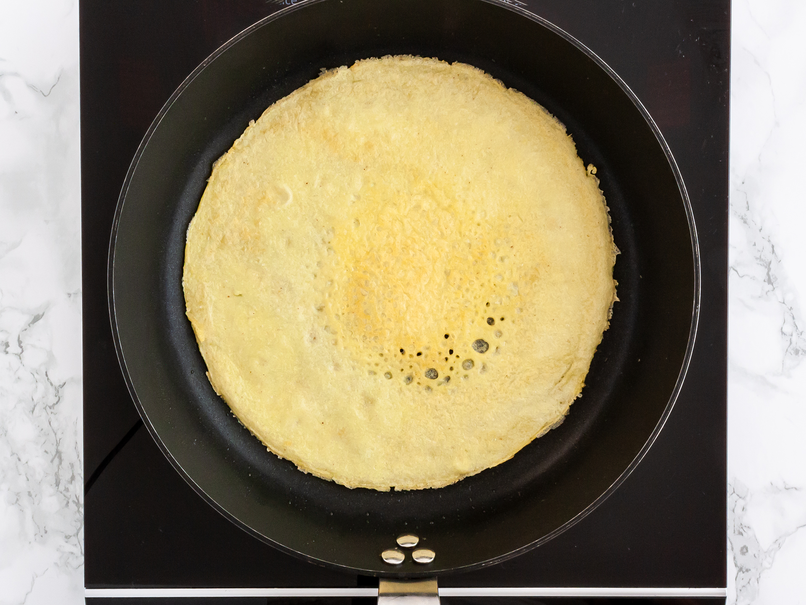

A Recipe for Rice Flour Crepes.
-
Level: EASY
-
TRT: 25"22
-
YIELD: 3 servings.

Ingredients
- 3 eggs
- 1 and 1/4 cups rice flour
- 1 cup milk
- 2 tablespoons melted butter
- 1 teaspoon butter, for the pan
RECIPE
- First, combine all the ingredients and have a smooth crepe batter.
- Second, heat a non-stick pan until hot. Grease it with butter using a non-stick brush. This is just for the first crepe, you don’t need to butter it each time because the batter contains melted butter.
- Third, pour crepe batter in the middle of the hot pan using a ladle or pour 1/4 cup of batter. Roll the pan from side to side so that the batter spreads evenly and gets a round shape. You shouldn’t add any more batter on
it.
- Fourth, cook it until you see bubbles on the top and the batter is no longer wet.
- Fifth, flip it over using a spatula and cook the other side about a minute or less. Transfer it on a plate and repeat the same steps for the remaining batter.